2025.12
“Drops” is a real-time audiovisual instrument that transforms the raw movement of a physical joystick into
evolving symmetrical drawings and generative sound.
Using analog input through a serial connection, the system maps the joystick’s two-dimensional motion to a
virtual pen moving across a 1000 × 1000 canvas. Each gesture is mirrored across horizontal, vertical, and
diagonal axes, generating up to eight simultaneous symmetrical paths. Rather than conventional drawing, the
experience feels closer to conducting: subtle movements expand into mandala-like forms, while rapid gestures
produce crystalline geometries.
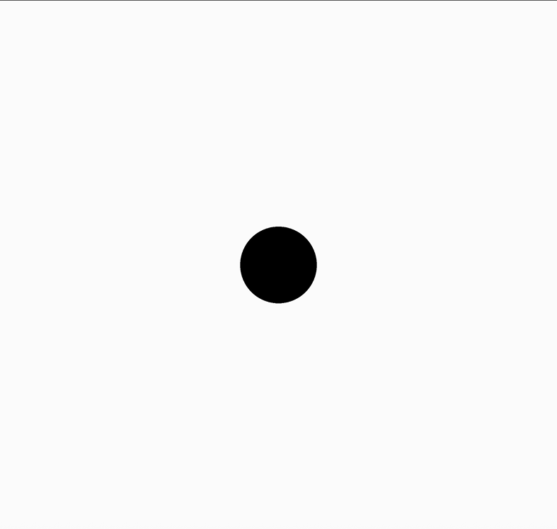
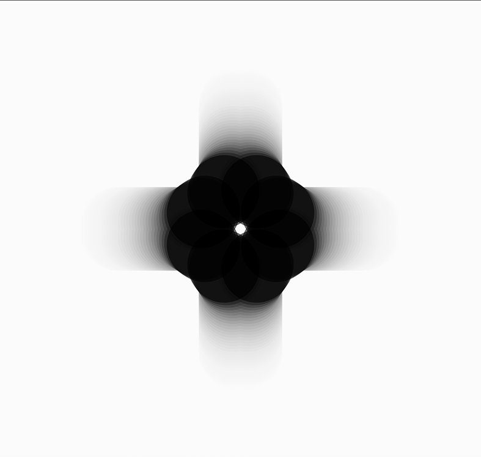
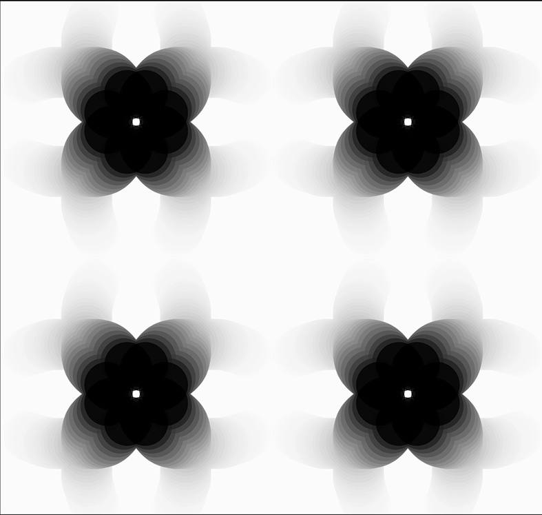
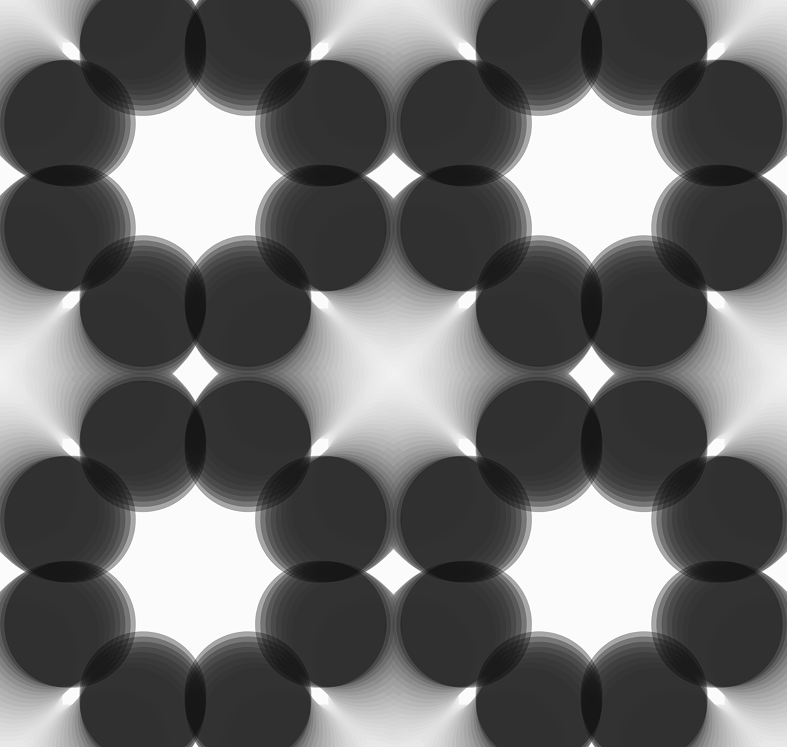
Sound is directly tied to motion.
The joystick’s horizontal axis controls oscillator frequency, shifting from low, meditative tones to higher,
sharper pitches, while the vertical axis modulates amplitude. Delay and reverb extend each sound in space,
creating an acoustic echo of every visual mark. A button on the joystick toggles the audio, allowing the
work to shift between a silent visual tool and a fully audiovisual instrument.
Arrow keys cycle through different pen-grid configurations, from 1 × 1 to 4 × 4, multiplying the mirrored
gesture across the canvas and increasing visual density from intimate linework to layered ornamental
patterns. A guide-line overlay, activated with the D key, briefly reveals the hidden axes of symmetry
beneath the composition.
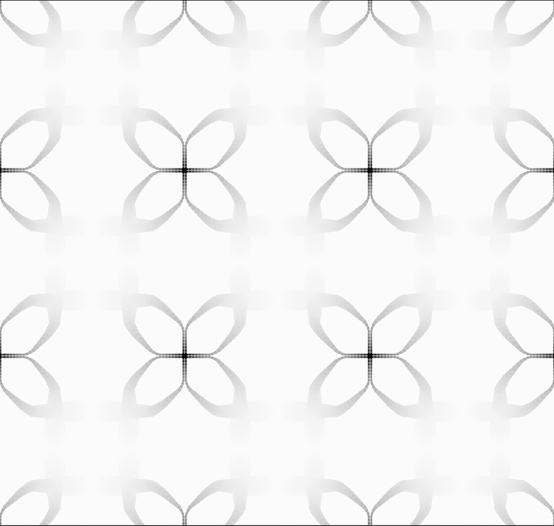
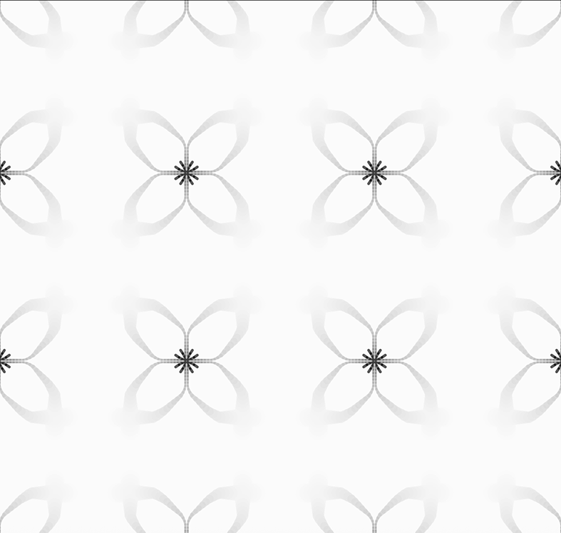
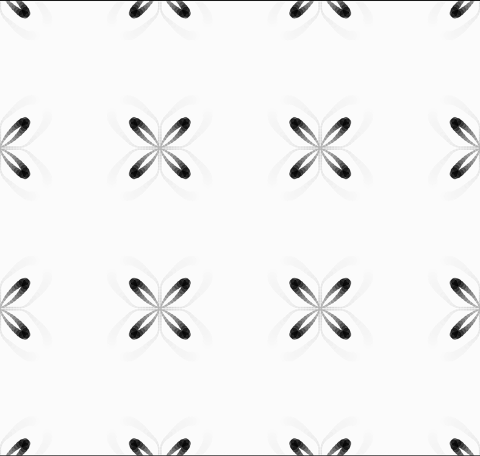
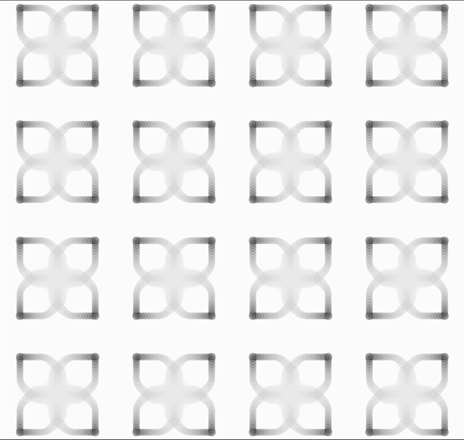
Positioned between drawing and performance, tool and instrument, each session begins with a blank white
field and ends as a unique record of gesture, movement, and presence.
Medium: p5.js, p5.sound, arduino
Keywords: generative art, physical computing, audiovisual, symmetry, real-time interaction
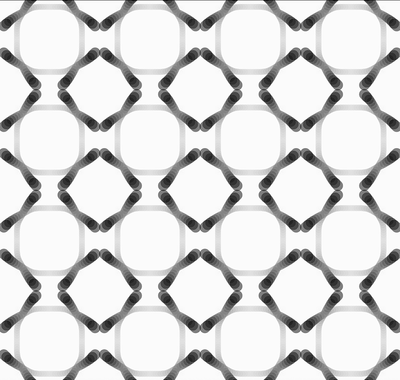
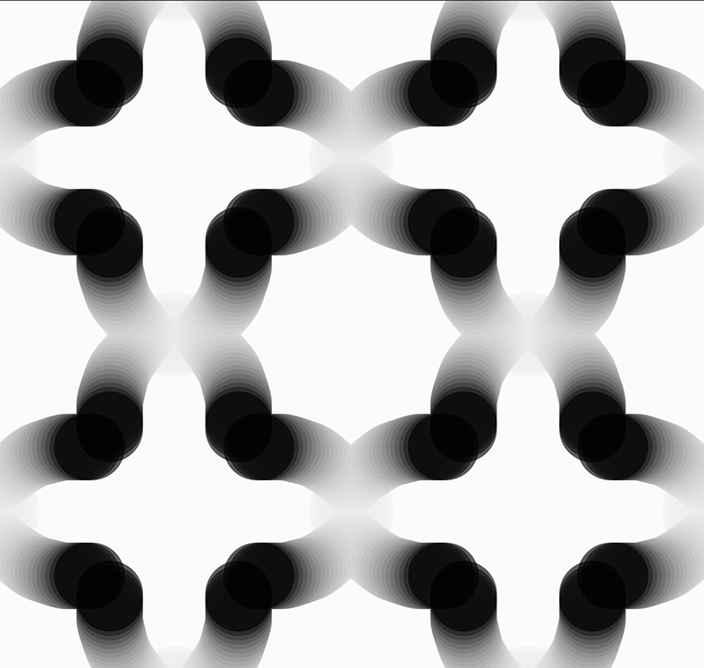
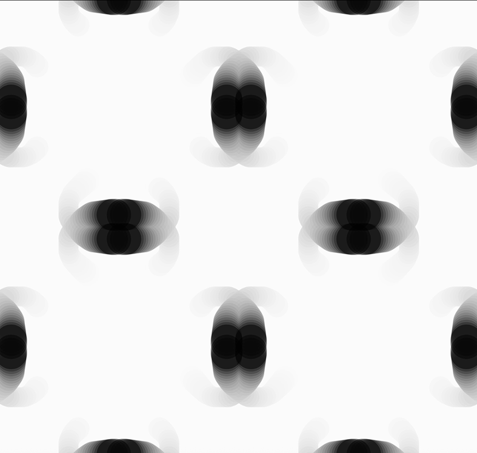
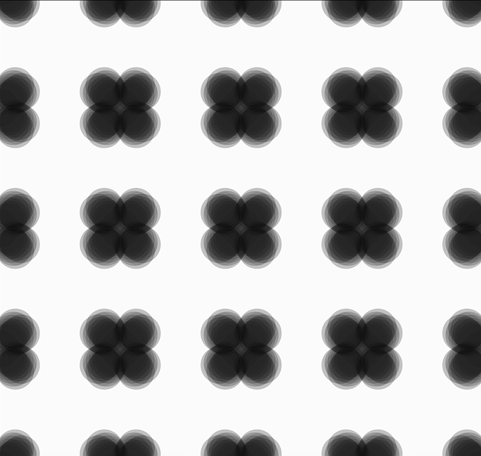